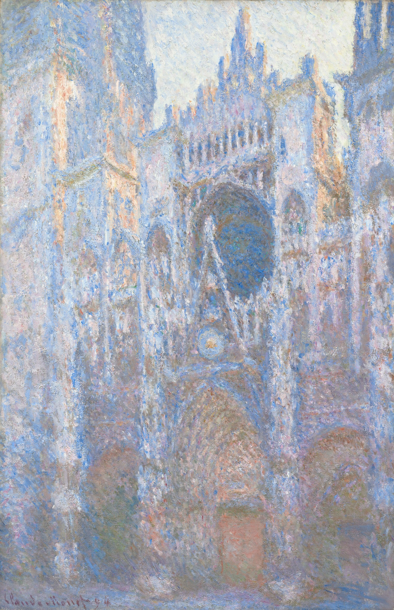

鲁昂大教堂，西立面 Rouen Cathedral, West Façade
莫奈 · 1894年 · 华盛顿国家美术馆
Claude Monet · 1894 · National Gallery of Art, Washington
图片：华盛顿国家美术馆开放资源，公有领域 / Image: National Gallery of Art Open Access, public domain

发现 · Discover
填满画面的立面 A façade that fills the canvas
大教堂的石头立面几乎填满了整张画布，两边都被切掉了。
The stone façade fills almost the entire canvas, cropped at both sides.
对面的房间 The room across the street
1892年初，莫奈在大教堂对面租下了房间，从窗口画它。
In early 1892, Monet rented rooms across from the cathedral and painted it from the window.
两个冬天 Two winters
他在1892年和1893年的2月到4月都来画，一共画了30多幅。
He came to paint it from February to April in both 1892 and 1893, making more than 30 views in all.
真正画的是空气 Painting the air
他真正想画的，不是石雕本身，而是包围着建筑的那层空气和光。
What he really wanted to paint was not the carved stone, but the air and light that surrounded the building.
像石头一样的颜料 Paint like stone
画面上厚厚的颜料，好像在模仿教堂石雕的质感。
The thick, rich paint seems to imitate the texture of the cathedral's carved stone.
签名 The signature
左下角签着“Claude Monet 94”。整个系列，他是1894年在吉维尼的画室里完成的。
Lower left is the signature "Claude Monet 94". He finished the whole series in his studio at Giverny in 1894.
故事 · The story
ACT I 第一幕 · 窗外的大教堂 The cathedral outside the window
1892年初，莫奈来到鲁昂，在大教堂对面租下房间。他一次又一次地画同一面墙，从早上画到傍晚。
In early 1892, Monet came to Rouen and rented rooms opposite the cathedral. He painted the same wall again and again, from morning to evening.
1894年 · 华盛顿国家美术馆 / 1894 · National Gallery of Art, Washington
ACT II 第二幕 · 三十多种光 More than thirty kinds of light
第二年冬天，他又回来了，一共画了30多幅。他说：“对我来说，主题本身无关紧要。我想画的，是主题和我之间存在的东西。”
He returned the next winter and made more than 30 views in all. "To me the motif itself is an insignificant factor," he said. "What I want to reproduce is what exists between the motif and me."
1894年 · 华盛顿国家美术馆 / 1894 · National Gallery of Art, Washington
ACT III 第三幕 · 二十幅一起 Twenty together
1895年，他把其中20幅放在一起，在巴黎画商杜兰-鲁埃的画廊展出。今天，这些画分散在世界各地的博物馆里，奥赛博物馆常设展出其中5幅。
In 1895, he showed 20 of them together at the gallery of his dealer, Durand-Ruel, in Paris. Today they are scattered across museums around the world; the Musée d'Orsay has five on permanent display.
1894年 · 华盛顿国家美术馆 / 1894 · National Gallery of Art, Washington
我想画的，是主题和我之间存在的东西。 What I want to reproduce is what exists between the motif and me.
作品档案 · Artwork record
| 画家（生卒年） · Artist (dates) | 克劳德·莫奈（1840–1926） / Claude Monet (1840–1926) |
|---|---|
| 画名 · Title | 鲁昂大教堂，西立面 / Rouen Cathedral, West Façade |
| 年份 · Date | 1894年 / 1894 |
| 材质 · Medium | 布面油画 / Oil on canvas |
| 尺寸 · Dimensions | 100.1 × 65.9 cm |
| 收藏地 · Collection | 华盛顿国家美术馆 / National Gallery of Art, Washington |
关于画家 · About the artist
克劳德·莫奈（1840–1926），法国印象派最重要的风景画家。他生于巴黎，在勒阿弗尔长大。普法战争期间（1870–71）曾移居伦敦。1883年起住在吉维尼，晚年专注于在不同光线下反复画同一主题，比如干草堆、鲁昂大教堂和他自己的花园。
Claude Monet (1840–1926) was the leading French Impressionist landscape painter. Born in Paris, he grew up in Le Havre and moved to London during the Franco-Prussian War (1870–71). From 1883 he lived in Giverny, where he painted series of a single subject under different light: haystacks, Rouen Cathedral and his own garden.